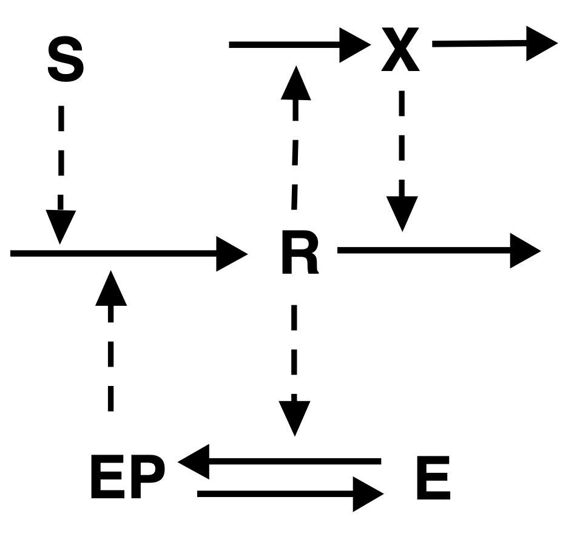

Lab 05: Feedback loops
Circadian Clock
The circadian clock is an internal physiological mechanism that shows oscillations of 24 hours. The existence of such internal cycle is apparent when we travel or right after daylight saving time switch.
An established mechanism for producing limit cycles in molecular networks is negative feedback. For instance, we can have an enzyme \(X_1\) that produces \(X_2\) with some rate, then \(X_2\) produces \(X_3\), and so on until \(X_n\), but then \(X_n\) has a negative influence of \(X_1\). The chain of reaction is necessary to create a delay.
We consider here a model for the Drosophila. We have the protein PER (for period), denoted by \(P_0\), that is phosphorylated into \(P_1\) and then \(P_2\): \[ \ce{P_0 <=> P_1 <=> P_2}. \]
The protein \(P_2\) is then transported into the nucleus, where it inhibits the production of PER mRNA (and thus the protein PER).
After a few steps and simplifications, Tyson et al. (1999) showed that the model can be reduced to \[ \left\{\begin{aligned} M' &= \frac{\nu_m}{1+\left(\frac{P(1-q)}{2P_\mathrm{crit}}\right)^2} - k_m M, \\ P' &= \nu_p M - \frac{k_{p_1}P q + k_{p_2}P}{J_p + P} - k_{p_3} P, \\ q &= \frac{2}{1+\sqrt{1 + 8 K_\mathrm{eq} P}}, \end{aligned}\right. \]
where \(P\) is the total PER protein and \(M\) is the mRNA concentration. The parameters are:
| Parameter | Value |
|---|---|
| \(\nu_m\) | 1 |
| \(k_m\) | 0.1 |
| \(\nu_p\) | 0.5 |
| \(k_{p_1}\) | 10 |
| \(k_{p_2}\) | 0.03 |
| \(k_{p_3}\) | 0.1 |
| \(K_\mathrm{eq}\) | 200 |
| \(P_\mathrm{crit}\) | 0.1 |
| \(J_p\) | 0.05 |
Implement the model in MatCont and simulate an orbit. (The time unit is hours.) The initial condition is \(M(0)=0.1\) and \(P(0)=0.1\). You can copy and paste this code for the equations:
q=(2/(1+sqrt(1+8*Keq*PP))) MM'=vm/(1+( PP*(1-q)/(2*Pcrit) )^2) - km*MM PP'=vp*MM-(kp1*PP*q+kp2*PP)/(Jp+PP)-kp3*PP
- Manually find the period. To do so, start from any point on the cycle and then integrate for enough time so to close the cycle. To get the exact value, do
Select->Initial Pointand selectLC Select Cycle. It will ask for tolerance and number of discretization points.
- A limit cycle should contain an (unstable) equilibrium or another unstable limit cycle (why?) Integrate the system backward in time to approximate it.
- Continue the unstable equilibrium with respect to \(k_{p_1}\), both backward and forward. Report all bifurcations.
- Continue the first Hopf point with respect to both \(k_{p_1}\) and \(K_\mathrm{eq}\), and find a region in the \((k_{p_1},K_\mathrm{eq})\) plane that allows for a limit cycle to exist. Hint: if it is too slow, increase
Maxstepsizein theContinuer.
- Go back to the original Hopf point, and now continue it with respect to the period and \(k_{p_1}\). Plot how the period varies with respect to \(k_{p_1}\).
- Select the original LC of 24 hours. Then, try to continue it with respect to \(k_{p_1}\) and \(K_\mathrm{eq}\). The curve should represent all possible combinations of the parameters giving a cycle of period 24 hours. Notice that you will see some limit point of cycles (LPC).
Activator-inhibitor oscillations
Consider the following network loop from Tyson, Chen, and Novak (2003):

(The activation for the enzyme \(\ce{E}\) are of Michaelis-Menten type.)
The corresponding system of equations is: \[ \begin{aligned}{} [\ce{R}]' &= k_0 [\ce{E_p}] + k_1[\ce{S}] - k_2[\ce{R}]-k_2'[\ce{X}][\ce{R}], \\ [\ce{X}]' &= k_5 [\ce{R}] - k_6[\ce{X}], \\ [\ce{E_p}]' &= \frac{k_3[\ce{R}](1-[\ce{E_p}])}{J_3 + 1-[\ce{E_p}]} - \frac{k_4[\ce{E_p}]}{J_4 + [\ce{E_p}]}. \end{aligned} \]
- Simulate an orbit for \([\ce{R}](0)=[\ce{X}](0)=[\ce{E_p}](0)=0.1\) and parameters:
| Parameter | Value |
|---|---|
| \([\ce{S}]\) | 0.2 |
| \(k_0\) | 4 |
| \(k_1\), \(k_2\), \(k_2'\), \(k_3\), \(k_4\) | 1 |
| \(k_5\) | 0.1 |
| \(k_6\) | 0.075 |
| \(J_3\), \(J_4\) | 0.3 |
- Try to approximate the period of the limit cycle.
- For larger \([\ce{S}]\), say \([\ce{S}] = 0.5\), there is no limit cycle. Approximate the equilibrium (it should be a spiral), then continue the curve backward with respect to \([\ce{S}]\). Stop at \([\ce{S}]\approx 0\). Do you observe bifurcations?
- Select the Hopf bifurcation, and continue the limit cycle with respect to \([\ce{S}]\). You should obtain a limit point of cycle. Find the corresponding value of it.
- Plot in 3D the limit cycle family with respect to \([\ce{S}]\). Notice that for a range of \({\ce[S]}\) (which one?) the system is bistable. The leftmost Hopf is subcritical, whereas the other one is supercrical. Which one is a catastrophic bifurcation?